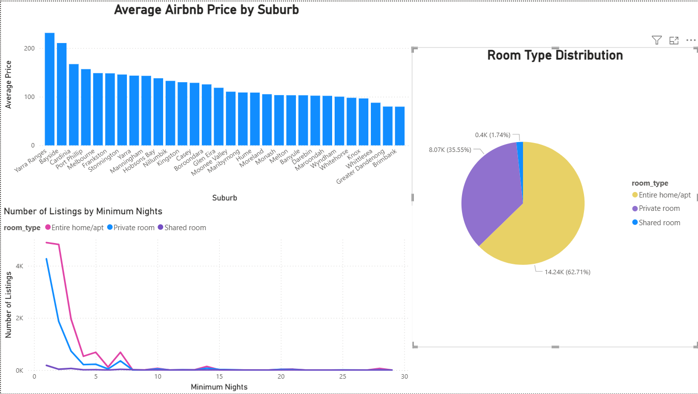
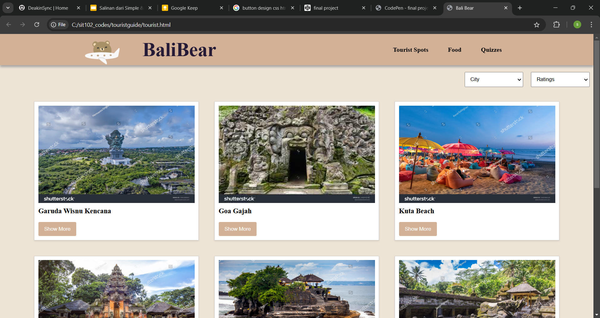
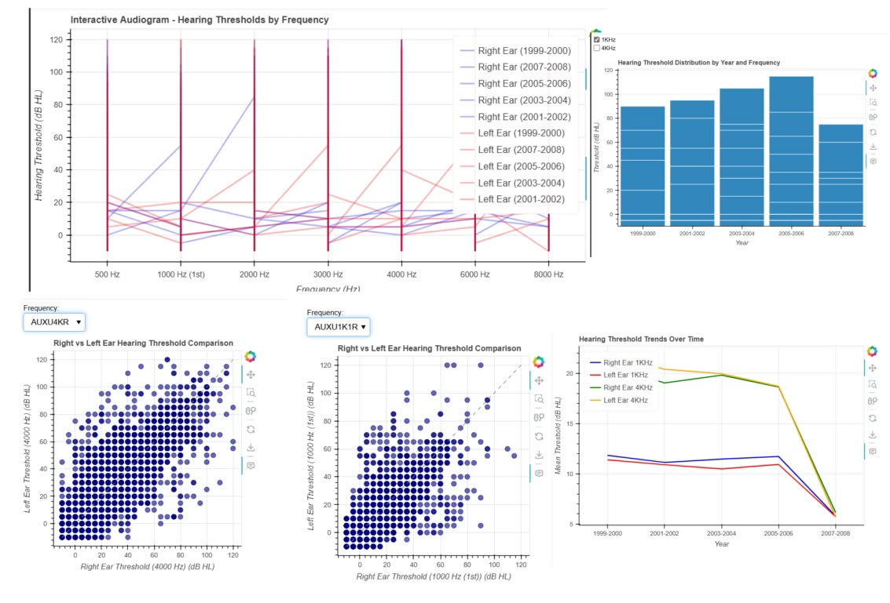
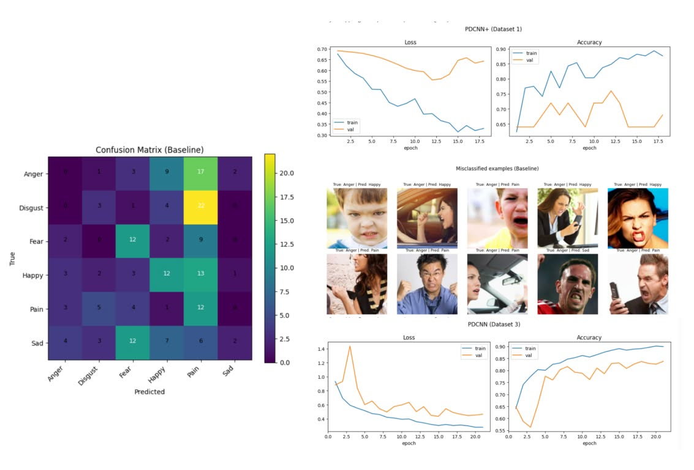
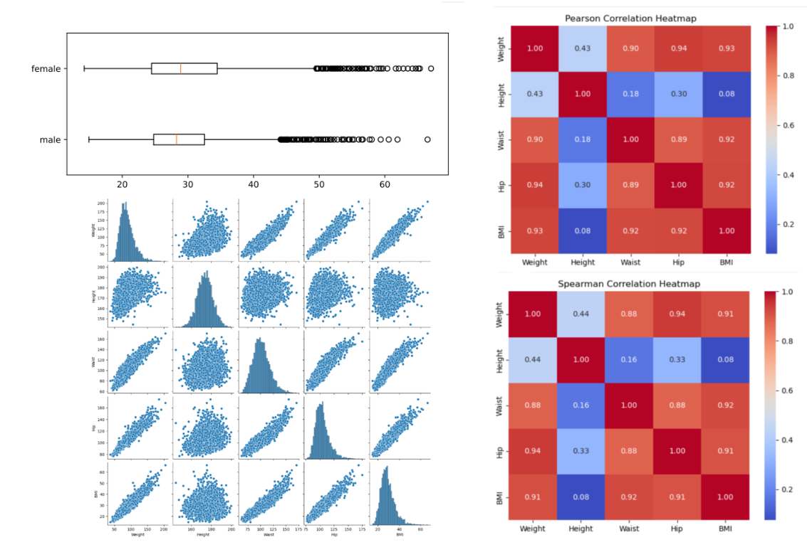
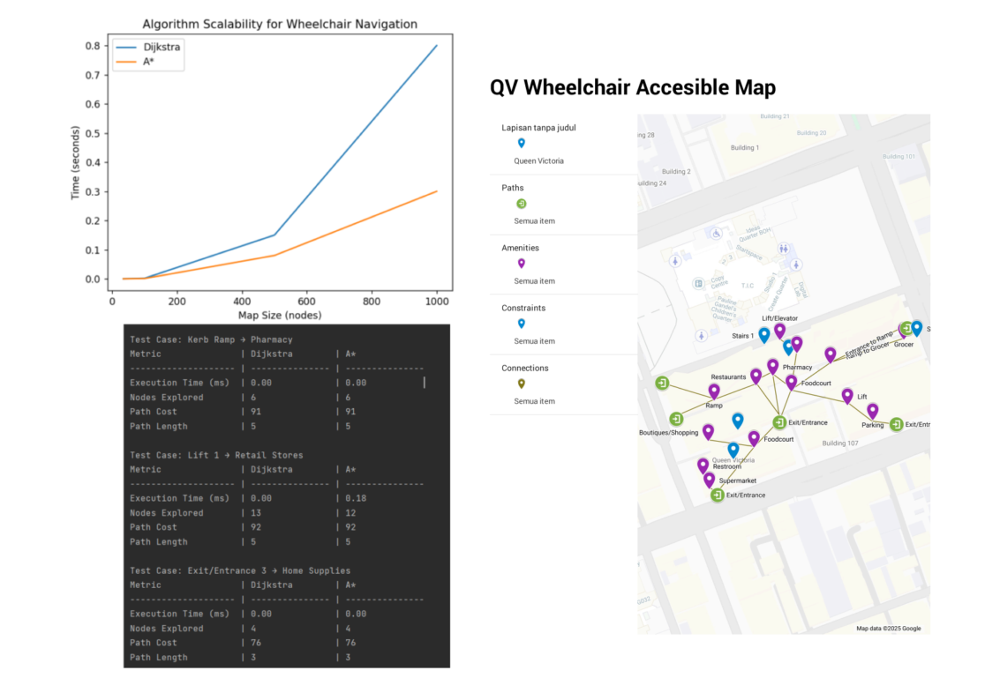

This project is an application design for an art gallery showcase using Figma aiming to provide an immersive experience for users to explore various artworks, artists, and exhibitions. It features a clean and intuitive interface, with galleries organized by categories. Users can view high-resolution images of the artwork, read detailed descriptions, and learn about the artists behind the pieces. The design prioritizes user accessibility and seamless navigation to ensure an enjoyable browsing experience for art enthusiasts.
A technology-focused website aimed at educating people about future innovations. This team project involved web design, research, collaboration, and teamwork, as well as custom coding using WordPress aiming to spread knowledge to a wide variety of audiences.

This project showcases an interactive Power BI dashboard analysing Airbnb listings in Melbourne. The dashboard highlights insights such as average prices by suburb, room type distribution, and listing trends based on minimum nights. It demonstrates my skills in data analysis, dashboard creation, and data visualisation.

A travel guide web application designed to help tourists explore Bali more easily. The platform provides users with useful travel information after logging in, including local tourist spot recommendations, a customizable food recommendation page, and a quiz that allows users to test their knowledge about Bali. The food recommendation feature includes a checklist of ingredients and allergens, allowing travellers to discover dishes that match their personal preferences and dietary needs.

This project focuses on analysing hearing threshold data using interactive data visualisation techniques. The dashboard explores hearing levels across different frequencies and years, comparing right and left ear thresholds through scatter plots, line charts, and distribution graphs. The project highlights patterns in hearing performance over time and demonstrates skills in data analysis, visualisation, and interpreting complex datasets.

This project explores facial emotion recognition using deep learning models. The system analyses facial images to classify emotions such as anger, disgust, fear, happiness, pain, and sadness. The project includes model training, evaluation using confusion matrices, and performance tracking through loss and accuracy graphs. Misclassified examples were also analysed to better understand model limitations and improve classification performance. This project demonstrates skills in machine learning, neural networks, data analysis, and model evaluation.

This project explores body measurement data through statistical analysis and visualisation techniques. It includes distribution comparisons between male and female BMI, as well as scatterplot matrices analysing relationships between height, weight, waist, hip measurements, and BMI. Correlation heatmaps (Pearson and Spearman) were used to identify strong relationships between variables. This project demonstrates skills in data analysis, exploratory data visualisation, and interpreting real-world datasets.

This project focuses on developing an accessible navigation system for wheelchair users using pathfinding algorithms. Implemented in Python, the system models environments using matrices and applies Dijkstra’s algorithm and A* search to determine optimal paths. The project also compares algorithm performance based on execution time, nodes explored, and path efficiency. A visual map interface was created to represent accessible routes and key locations. This project demonstrates skills in algorithms, graph theory, optimisation, and accessibility-focused design.